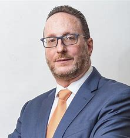

Eliecer Feinzaig, Partido Liberal Progresista
- Economista y político costarricense, que rige como presidente del Partido Liberal Progresista, además de ser diputado y jefe de fracción por este partido para el periodo 2022-2026 en la Asamblea Legislativa.
-
Promover un desarrollo economico fuerte y estable en Costa Rica
-
Promueve la mejora de la educacion publica
-
Mejorar la seguridad de los costarricenses y disminuir la corrupción